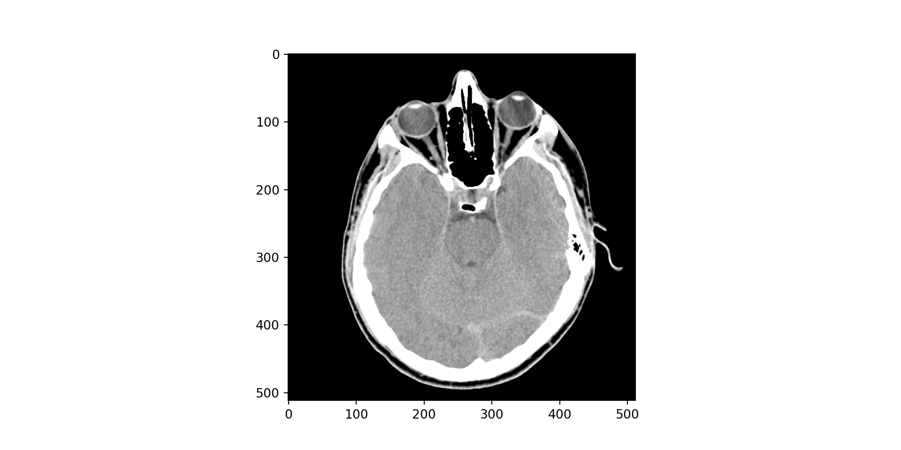
Procesado de Señales e Imágenes Médicas
Ingeniería Biomédica
Sitio de la asignatura Procesado de Señales e Imágenes Médicas
Procesamiento de imágenes
What is Digital Image Processing?
Definition
- Two-dimensional function, f(x, y)
- Where x and y are spatial coordinates.
- The amplitude of f at any pair of coordinates (x, y) is called the intensity.
The digital image
If the coordinates and the intensity are discrete quantities the image turns into a digital image.
What is Digital Image Processing?
Definition
A digital image is composed by a finite number of elements called PIXEL.
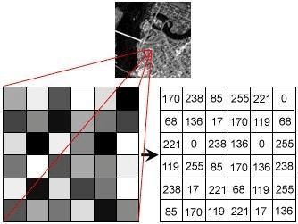
Depth
A digital image is composed by a finite number of elements called PIXEL. Bpp( Bits per pixel)
- 1bpp. B/W image, monochrome.
- 2bpp. CGA Image.
- 4bpp. Minimun for VGA standard.
- 8bpp. Super-VGA image.
- 24bpp. Truecolor image.
- 48bpp. Professional-level images.
What is Digital Image Processing?
Definition
Color Space
How can i represent the color
- RGB.
- CMYK.
- HSV.
- Among others.
What is Digital Image Processing?
import cv2
import matplotlib.pyplot as plt
img = cv2.imread("./images/image01.tif")
fig001 = plt.figure()
plt.imshow(img)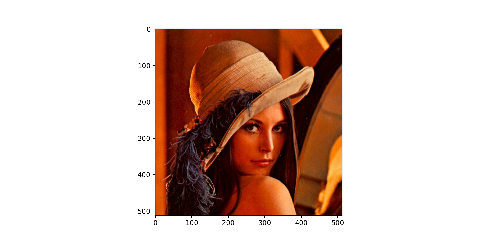
import cv2
import matplotlib.pyplot as plt
img = cv2.imread("./images/lena.tif")
RGB_img = cv2.cvtColor(img, cv2.COLOR_BGR2RGB)
fig002 = plt.figure()
plt.imshow(RGB_img)Images and vision
- The paradigm surrounding the conceptualization of light and perception has undergone significant evolution.
- Initially, the prevailing understanding within humanity posited that visual stimuli emanated from the eye itself.
- However, contemporary knowledge has elucidated that light originates from external sources, undergoes reflection from objects within the environment, and is subsequently captured by the eye.
Images and vision
Important
We also understand that light is a type of electromagnetic radiation, and its wavelength falls within a range from 400 nanometers to 700 nanometers.
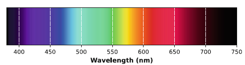
Images and vision
Important
The most common way light is made is by something getting really hot. This makes energy that comes out as light.
Some important term are:
- Absortion: It is the fraction of light which a body absorbs depending on the wavelength.
- Reflectance: It is the fraction of the incoming light which a body reflects. It’s a number between 0 to 1 and also depends on wavelength.
- Luminance: It is the fraction of the incoming light which a surface reflects. It’s a function of absortion and reflectance, and because of that luminance depends on wavelength.
Images and vision
The eye
- Our eye has two types of cells. Cones and Rods.
- Cones are the most sensitive cells but above all these are color sensitive.
- Rods responds only two intensity and they used on night, mostly.
- Humans, like most primates, are trichomats. This means that humans have three types of cones (Long, Medium and shorts).
- 65% of longs (Sense red)
- 33% of mediums (Sense green)
- 2% of shortsv(Sense blue)
Images and vision
The artificial eye
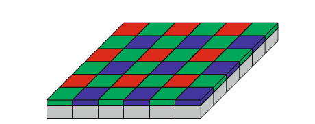
The currents from each sensor are function of the luminance and the spectral response filter.
Images and vision
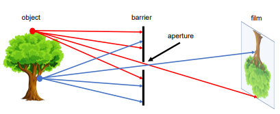
Images and vision
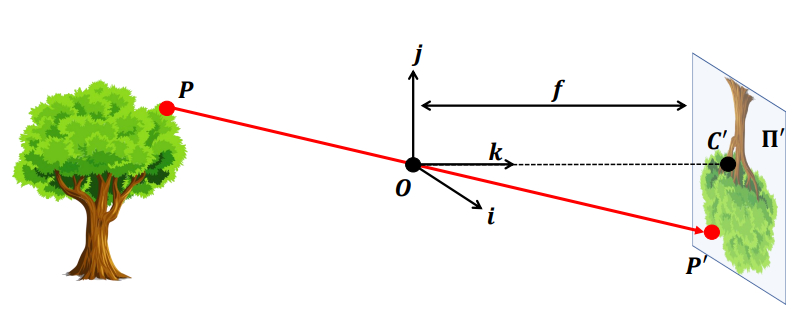
Images and vision
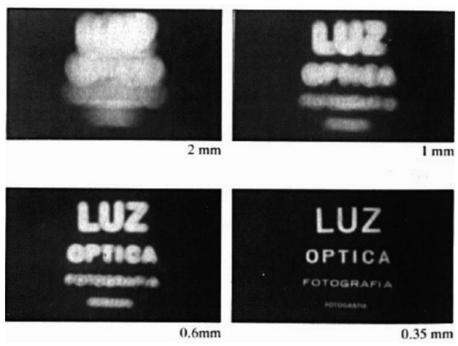
Images and vision
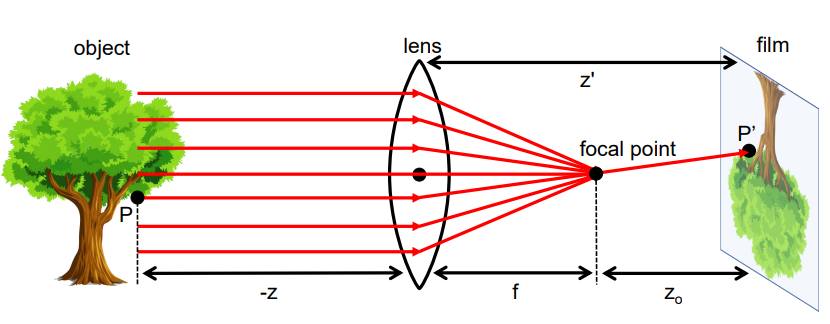
Images and vision
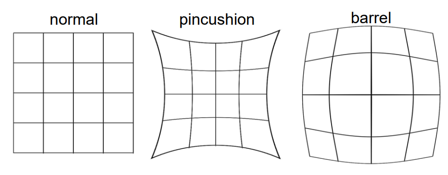
Sampling and quantization
Definition
Sampling: Digitalization of the spatial coordinates.
Definition
Quantiazation: Digitalization of the light intensity (amplitude).
Sampling and quantization
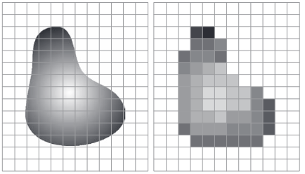
Sampling and quantization


Sampling and quantization


Sampling and quantization
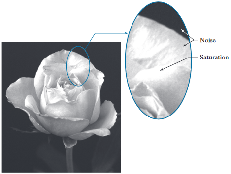
Linear indexing
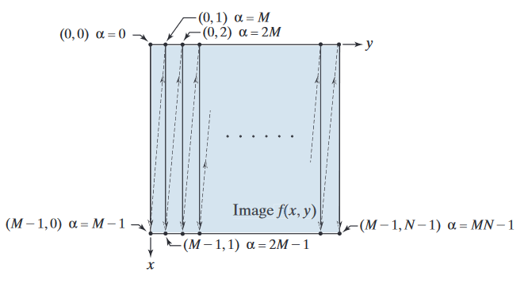
From normal to linear
\[\alpha = My+x\]
From linear to normal
\[x = \alpha \bmod M\]
\[y = \frac{\alpha - x}{M}\]
Spatial resolution
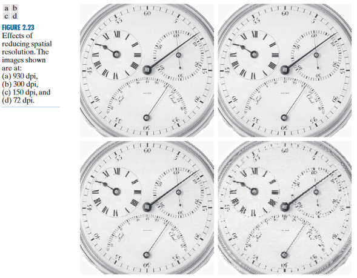
Intensity resolution
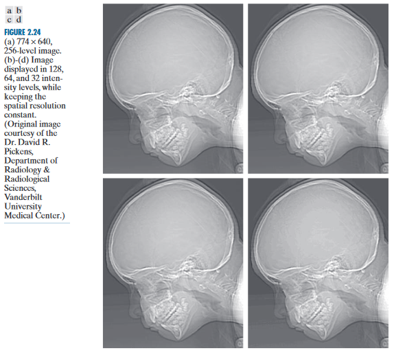
Intensity resolution
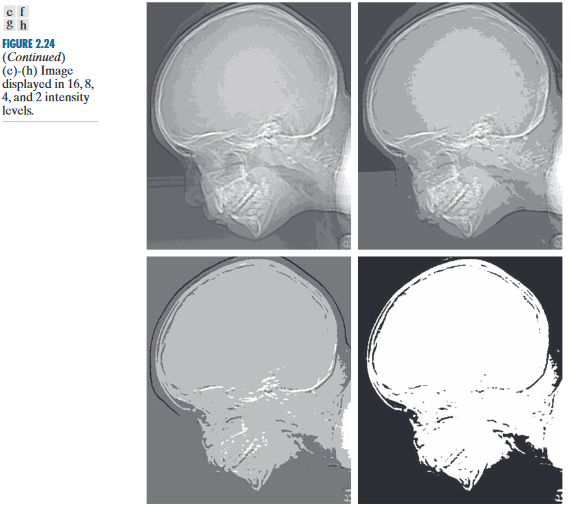
Relationships between pixels
Neighborhood